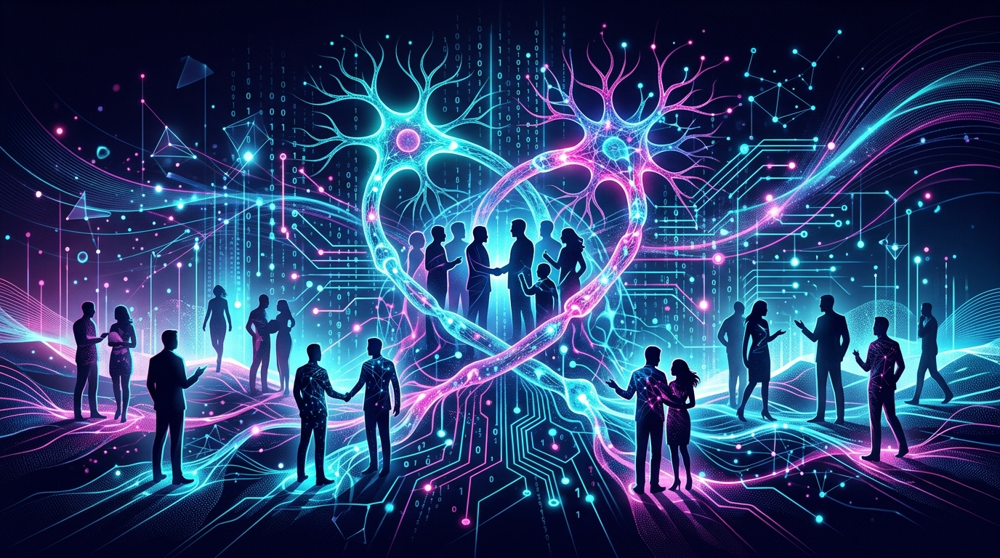

👋 Hello, I'm
Exploring the profound ways artificial intelligence transforms human behavior, social structures, and the ethical fabric of our world. I believe in building AI that serves humanity — not the other way around.

About Me
I'm Potato — a researcher, writer, and critical thinker fascinated by the intersection of artificial intelligence and human behavior. My work focuses on understanding how AI systems influence our decisions, reshape social norms, and challenge our very notion of what it means to be human in an increasingly algorithmic world.
With a background spanning cognitive science, computer science, and philosophy, I bring a multidisciplinary lens to the most pressing questions of our time: Can we trust AI to be fair? How do algorithms shape our identity? And what safeguards do we need to preserve human agency?
Research Focus
My research sits at the frontier of AI and society, investigating how intelligent systems reshape the way we think, connect, and make decisions.
How recommendation algorithms and personalized AI subtly reshape human preferences, attention spans, and decision-making patterns over time.
Behavioral PsychologyExamining bias in AI systems — from hiring algorithms to criminal justice tools — and developing frameworks for more equitable machine learning.
AI EthicsExploring how AI-driven platforms construct our digital selves and how this digital identity feeds back into our real-world sense of self.
SociologyInvestigating the erosion of human agency in an age of AI assistants, automated decisions, and persuasive design patterns.
PhilosophyBuilding trust between humans and AI through explainability, transparency, and meaningful human oversight of autonomous systems.
HCIScenario planning and speculative research on how advanced AI will transform work, relationships, creativity, and governance in the next decade.
FuturismLatest Insights
Essays, analyses, and provocations about the AI-shaped future we're building.
From the moment you pick up your phone, algorithms are making micro-decisions that shape your mood, your attention, and ultimately your worldview. This essay traces the hidden pathways through which AI systems become the silent architects of human behavior.
Read More →A deep dive into how training data perpetuates systemic biases and what we can do to break the cycle of algorithmic discrimination.
Read More →Emotion recognition AI is a billion-dollar industry, but can machines truly understand what we feel — or are they just performing empathy?
Read More →The question isn't whether AI will change us — it already has. The real question is whether we'll be conscious enough to choose how it shapes who we become.
— Potato
My Journey
Get in Touch
Whether you want to collaborate on research, invite me to speak, or simply discuss the future of AI and humanity — I'd love to hear from you.